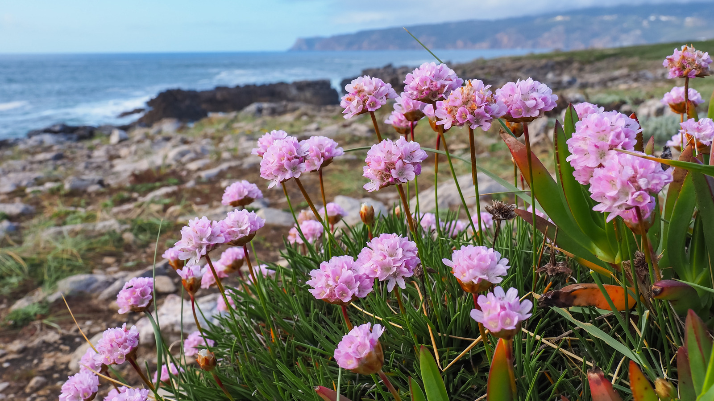
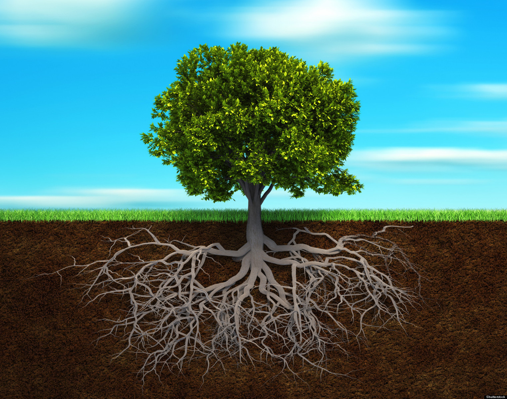
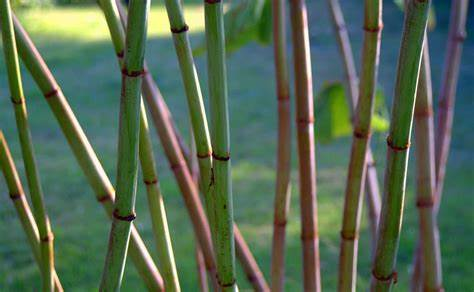

Plants are eukaryotic living organisms, and they have a special kingdom called the plant kingdom.
Parts of plants
-

-

-

Benefits of plants
- A source of food for humans and animals.
- The presence of plants on Earth leads to the renewal of oxygen on Earth.
- Plants contain essential nutrients for the human body, such as carbohydrates, vitamins, fiber, salts, proteins, and acids.
- Many medicines are extracted from plants to treat humans, and various perfumes.
- Plant cultivation provides a source of livelihood for the farmer, and it is also used in the fields of handicraft industry.